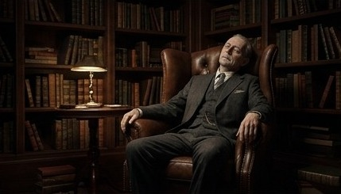
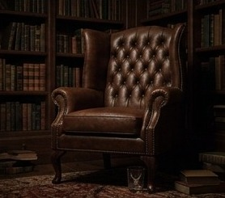
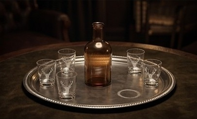
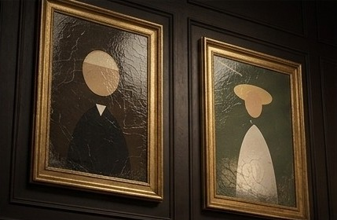
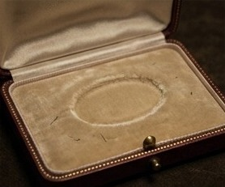
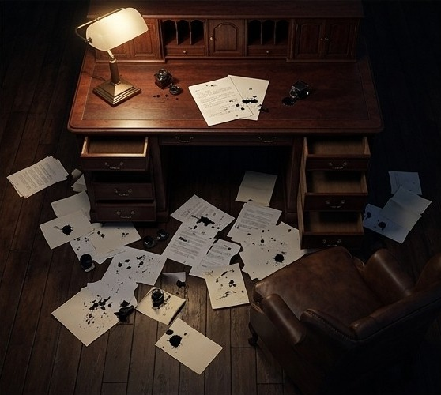
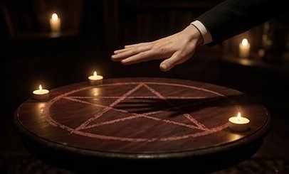

Tout ce qui se glisse dans les 8 enveloppes. Imprimez en couleur, découpez en suivant les pointillés ✂, collez une étiquette au recto de chaque enveloppe. Les joueurs ne les ouvrent que quand le pupitre le demande.
| Env. | Lieu | Documents de ce PDF | Cartes Objet |
|---|---|---|---|
| E1 | La bibliothèque | Photo de Lord Edgar · page d'agenda | O1 Verre au cerf |
| E2 | Le fumoir | Photo du plateau d'argent | O2 Carafe · O3 Mouchoir |
| E3 | La galerie | Photos du portrait et du Gainsborough | — |
| E4 | L'office | Reçu de l'épicerie · registre de la cave | O4 Mort-aux-rats |
| E5 | Chambre de Lady Margaret | Photo de l'écrin vide | O5 Lettre de « J. » |
| E6 | Chambre du docteur | Agenda du docteur | O7 Laudanum · O10 Reçu de Christie's |
| E7 | Le bureau | Photo du bureau fouillé | O8 Trousseau (+ O9 sans tiroir secret) |
| E8 | Le salon | La feuille de la planchette | O6 Broche d'émeraude |
La carte O9 « Lettre à Scotland Yard » se range dans le tiroir secret du pupitre avant la partie (menu du monde, 3 · Tiroir secret).




| Date | Mouvement | Visa |
|---|---|---|
| 29/10 | Porto ×2, salle à manger | G. |
| 30/10 | Bordeaux ×4, dîner | G. |
| 31/10 | Carafe du fumoir remplie, 21 h (brandy 1860) | G. |
| 31/10 | Champagne ×3, séance | G. |
Les rats ! Prier Mr Thomas d'en rapporter du village. — G.

Dans cette enveloppe aussi : les cartes O7 (Flacon de laudanum) et O10 (Reçu de Christie's).

Dans cette enveloppe aussi : la carte O8 (Trousseau de Lord Edgar), et la carte O9 si le pupitre n'a pas de tiroir secret.

VERRE · CERF · FUMÉE
Tracé par la planchette, seule, à 23 h. Madame Zorah jure ne pas l'avoir touchée.
Dans cette enveloppe aussi : la carte O6 (Broche d'émeraude), trouvée dans le châle de Madame Zorah.